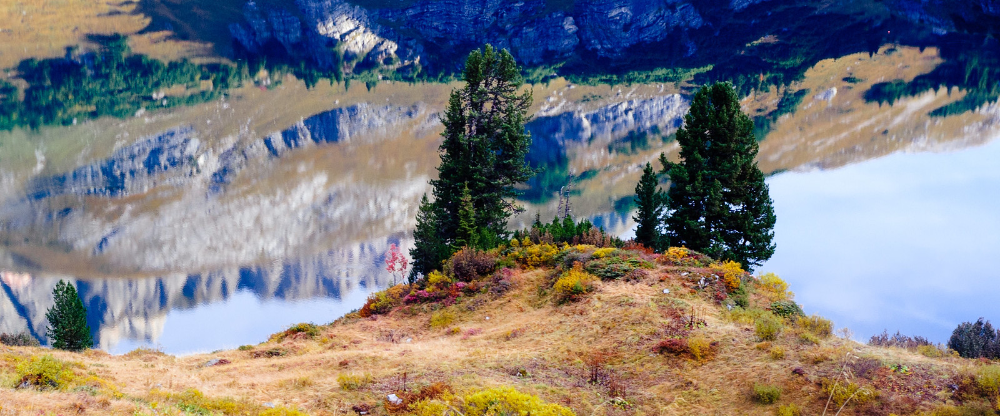

Here are some photos I have taken. You can find more here . Most of them are licensed under the Creative Commons License , meaning you can freely use them with proper attribution (=just add my name), just like you would do when citing an academic paper.
conferences
Workshop "Background beliefs in the construction of meaning" , Tübingen, Germany, 2025The 24th Amsterdam Colloquium , Amsterdam, Netherlands, 2024MECORE closing workshop , Konstanz, Germany, 2024Linguistics of Political Discourse summer school , Graz, 2024Workshop "Polar Question Meaning Across Languages" , Amsterdam, Netherlands, 2024The Acquaintance Inference Workshop , Konstanz, Germany, 2022NASSLLI summer school , Los Angeles, USA, 2022Natural Concepts Workshop , Hegne, Germany, 2022Workshop "Differentiating contents" , Pittsburgh, USA, 2015
non-conferences
St. Maarten parade , Utrecht, NetherlandsPeace rally , Stuttgart, Germany8th of March demonstration , Barcelona, Spain
mountains
Alpine village , Austria/SwitzerlandThe Alps , a collection of favoritesColorado Trail , USA, 2018Denali National Park , Alaska, USA, 2012-2013Joshua Tree National Park , California, USAPacific Crest Trail (Oregon and Washington) , USA, 2017Surselva , Graubünden, SwitzerlandYosemite National Park , California, USA, a collection of favorites
non-mountains
Arizona , USABodensee , Germany/Austria/SwitzerlandBlumeninsel Mainau (Flower Island Mainau) , GermanyCalifornia , USACrete , GreeceKonstanz , GermanyLos Angeles , USAMadeira , PortugalNaples , ItalyNew York , USAParis , FranceRiga , LatviaSalzburg , AustriaTübingen , GermanyVienna , Austria
faces
others self